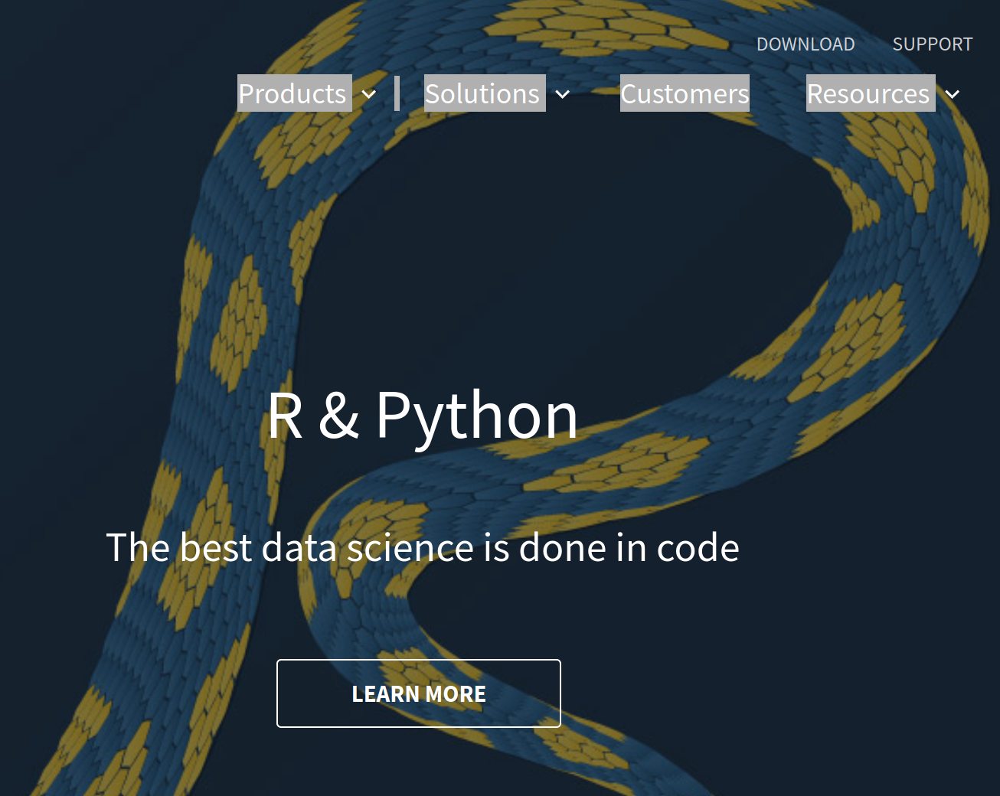

4 Interaction Environment
As kid of the 90s, reading about a new editor or fancy shell coming out triggers playing Inspector Gadget’s tune in my head. To invest a few fun hours into exploring a new tool that might save me a split second or two in processes that I run a hundred times on a daily basis may not always pay off by the hour even in a lifetime of programming, but is totally worth it in most case - at least to me. Repetitive work is tiring and error prone, adds to cognitive workload and shifts focus away from hard-to-tackle puzzles.
That being said, I am nowhere near the vim aficionados whose jaw-dropping editing speed probably takes 1000s of hours to master and configure, and would not advise to overengineer setting up your environment. Like often, finding a personal middle ground between feeling totally uncomfortable outside of graphical user interfaces and editing code at a 100 words per minute pace is key.
Probably, investing in an initial setup of a solid editor plus some basic terminal workflows is a good starting point that can be revisted every once in a while, e.g., when we start a larger new project. What editor you will center your environment around will depend a lot on the programming language you chose. Yet, it also depends on your personal preference of how much investment, support and supportive features you want. The following features / criteria are likely the most influential when composing a programming environment for statisitcal computing:
- code highlighting, i.e., use of colors to highlight the structure of your code
- linting scans the code for potential errors and displays hints in the editor
- integrated debuggers allow to run parts of the code line by line and to inspect the inner workings of functions
- multi language support is important when work multiple programming or markup languages.
- terminal integration helps to run stuff using system commands
- git integration helps interact with git version control and do basic add, commit, push operations through the editor’s GUI
- build tools for programs that need rendering and compilation
- customizable through add-ins / macros
4.1 Integrated Development Environments (IDE)
While some prefer lightning fast editors such as Sublime Text that are easy to customize but rather basic out-of-the-box, IDEs are the right choice for most people. In other words, it’s certainly possible to move a five person family into a new home by public transport, but it is not convenient. The same holds for (plain) text editors in programming. You can use them, but most people would prefer an Integrated Development Environment (IDE) just like they prefer to use a truck when they move. IDEs are tailored to the needs and idiosyncrasies of a language, some working with plugins and covering multiple languages. Others have a specific focus on a single language or a group of languages.
4.1.1 RStudio
RStudio’s IDE RStudio has become the default environment for most R people and people who mostly use R but use C or Python and Markdown in addition. The open source RStudio IDEs version ships for free as RStudio Desktop and RStudio Server Open Source. In addition the creators of RStudio offer commercially supported versions of both the desktop and server version (RStudio Workbench). If you want your environment to essentially look like the environment of your peers, R Studio is a good choice. To have the same visual image in mind can be very helpful in workshops, coaching or teaching.
RStudio has 4 control panes which the user can fill with a different functionality like script editor, R console, terminal, file explorer, environment explorer, test suite, build suite and many others. I advise newcomers to change the default to have the script editor and the console next to each other (instead of below each other). That is because (at least in the Western world) we read from left to right and send source code from left to right in order to execute it in the console. Combine this practice with the run selection shortcut (cmd+enter or ctrl+enter on a PC) and you have gained substantial efficiency compared to leaving your keyboard, reaching four mouse and finding the right button. In addition, this workflow should allow you to see larger chunks1 of your code as well as your output.
Explore Extensions
explore addins
explore the API
Favorite Shortcuts
use cmd+enter (ctrl+enter on PCs) to send selected code from the script window (on the left) to the console (on the right)
cmd+shift+option+R (roxygen while on function)
use ctrl 1,2 to
Pitfalls
- save defaults
- git integration
- below vs beyond
4.1.2 Visual Studio Code
Unlike RStudio, Microsoft’s Visual Studio Code started out as modular, general purpose IDE not focused on a single language. In the meantime there is not only great Python support, but also auto-completion, code highlighting for R or Julia and many other languages.
4.1.3 Others
Here are some of the features you are looking for in an IDE for programming with data:
For R, the Open Source Edition of R Studio Desktop is the right choice for most people. (If you are working in a team, R Studio’s server version is great. It allows to have a centrally managed server which clients can use through their a web browser without even installing R and R Studio locally.) R Studio has solid support for a few other languages often used together with R, plus it’s customizable. The French premier thinkR Colin_Fay gave a nice tutorial on Hacking R Studio at the useR! 2019 conference.
While R Studio managed to hold its ground among R aficionados as of fall 2020, Microsoft’s free Visual Studio Code has blown the competition out of the water otherwise. Microsoft’s IDE is blazing fast, extendable and polyglot. VS Code Live Share is just one rather random example of its remarkably well implemented features. Live share allows developers to edit a document simultaneously using multiple cursors in similar fashion to Google Docs, but with all the IDE magic. And in a Desktop client.
Another approach is to go for a highly customizable editor such as Sublime or Atom. The idea is to send source code from the editor to interchangeable REPLs which can be adapted according to the language that needs to be interpreted. That way a good linter / code highlighter for your favorite language is all you need to have a lightweight environment to run things. An example of such a customization approach is Christoph Sax’ small project Sublime Studio.
Other examples for popular IDEs are Eclipse (mostly Java but tons of plugins for other languages), or JetBrains’ IntelliJ (Java) and PyCharm (Python).
A word on vim and emacs (just so you know what people are talking about)
4.2 The Console / Terminal
In addition to the editor you will spent most of your time with, it is also worthwile to put some effort into configuring keyboard driven interaction with your operating systems. And again, you do not need to be a terminal virtuoso to easily outperform mouse pushers, a terminal carpentry level is enough. Terminals come in all shades of gray, integrated into IDEs, built into our operating system or as pimped third party applications. A program called a shell runs inside the terminal application to run commands and display output. bash is probably the most known shell program, but there tons of different flavors. FWIW, I love fish shell (combined with iterm2) for its smooth auto-completion, highlighting and its extras.
In the Windows world, the use of terminal applications has been much less common than for OSX/Linux – at least for non-systemadmins. Git Bash which ships with git version control installations on Windows mitigates this shortcoming as it provides a basic UNIX style console on windows. For a full fledged UNIX terminal experience, I suggest to use a full terminal emulator like CYGWIN. More recent, native approaches like powershell brought the power of keyboard interaction at OS level to a broader Windows audience – albeit with different Windows specific syntax. The ideas and examples in this book are limited to UNIX flavored shells.
| Command | What it does |
|---|---|
| ls | list files (and directories in a directory) |
| cd | change directory |
| mv | move file (also works to rename files) |
| cp | copy files |
| mkdir | make directory |
| rmdir | remove directory |
| rm -rf | (!) delete everything recursively. DANGER: shell does not ask for confirmation, just wipes out everything. |
4.2.1 Remote Connections SSH, SCP
One of the most important use cases of the console for data analysts is the ability to log into other machines, namely servers that most often run on LINUX. Typically we use the SSH protocol to connect to a (remote) machine that allows to connect through port 22.
Note that sometimes firewalls limit access to ports other than those needed for surfing the web (8080 for http:// and 443 for https://) so you can only access port 22 inside an organization’s VPN network.
To connect to a server using a username and password simply use your console’s ssh client like this:
ssh mbannert@someserver.orgYou will often encounter another login procedure though. RSA key pair authentication is more secure and therefore preferred by many organizations. You need to make sure the public part of your key pair is located on the remote server and hand the ssh command the private file:
ssh -i ~/.ssh/id_rsa mbannert@someserver.orgFor more details on RSA key pair authentication, check this example from the case study chapter Section 11.1.
While ssh is designed to log in to a remote server and from then on issue commands like the server was a local linux machine, scp copies files from one machine to another.
scp -i ~/.ssh/id_rsa ~/Desktop/a_file_on_my_desktop
mbannert@someserver.org:/some/remote/location/The above command copies a file dwelling on the users desktop into a /some/remote/location on the server. Just like ssh, secure copy (scp) can use RSA key authentication, too.
4.2.2 Git through the Console
Another common use case of the terminal is managing git version control. Admittedly, there is git integration for many IDEs that allow you to point and click your way commits, pushes and pulls as well as dedicated git clients like GitHub Desktop or Source Tree. But there is nothing like the console in terms of speed and understanding what you really do. The Chapter 5 sketches an idea of how to operate git through the console from the very basics to a feature branch based workflow.
Many coding conventions recommend to have no more than 80 characters in one line of code. Sticking to this convention should prevent cutting off your code horizontally.↩︎